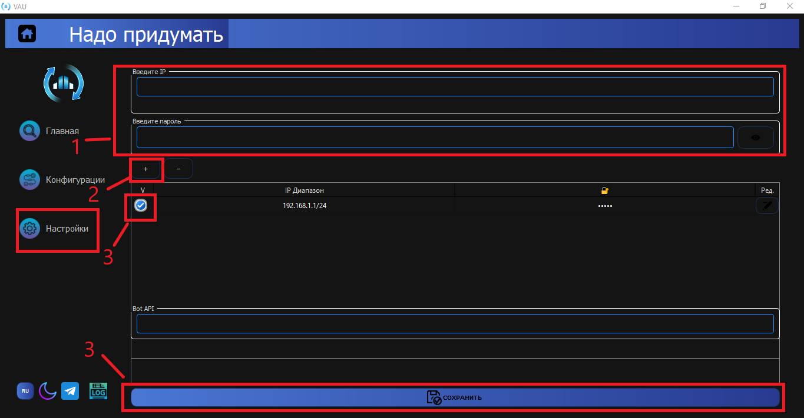
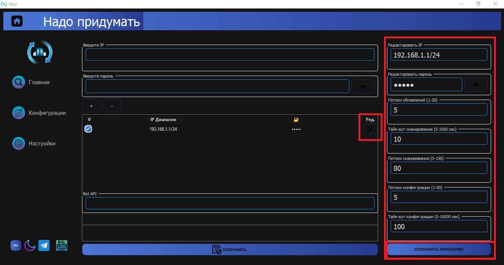
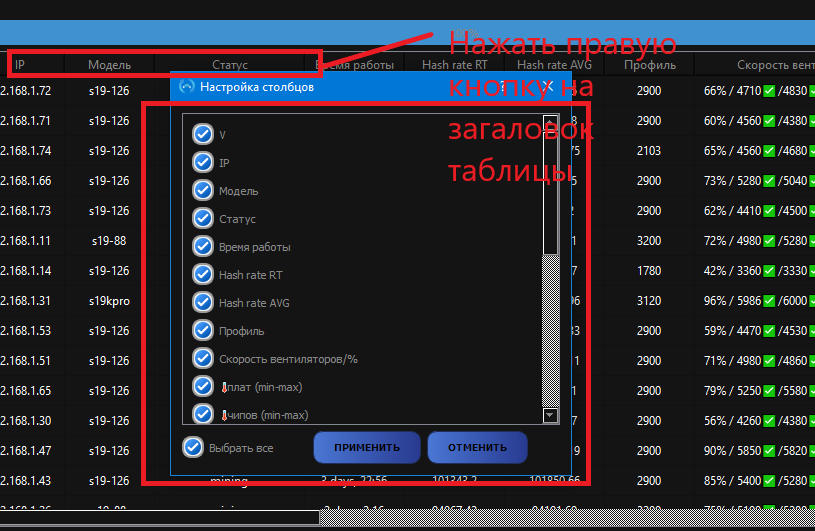
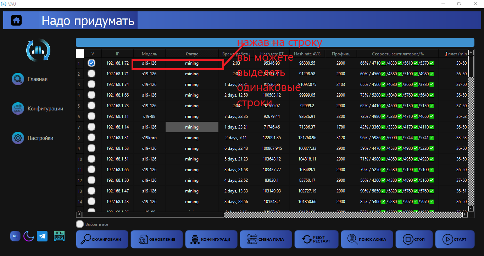
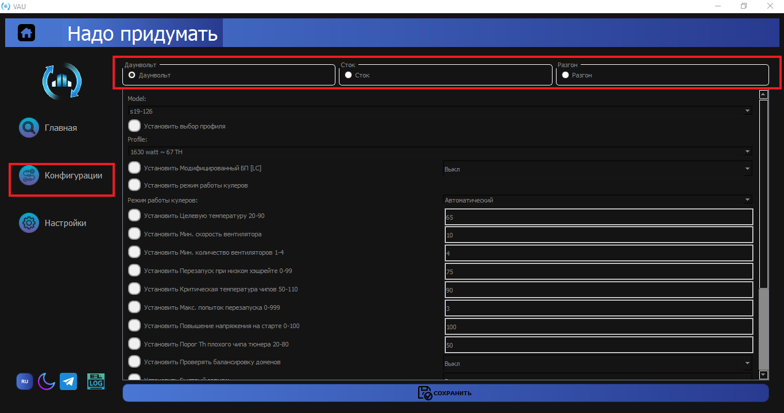
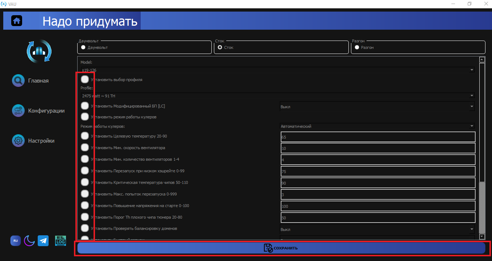
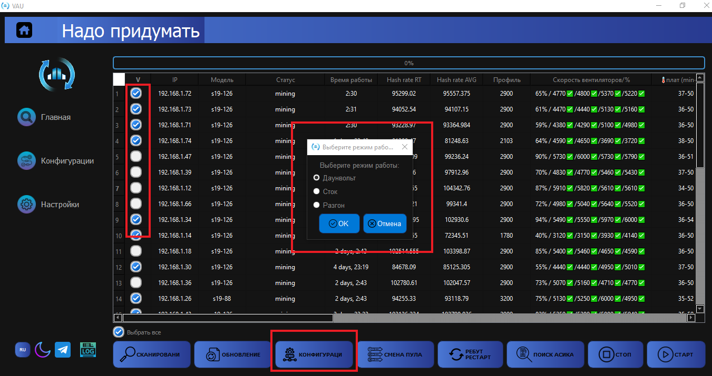
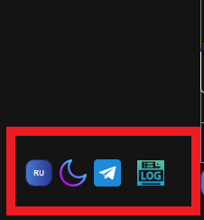

Запуск
Программа обновленного VAU/ ниже Описание Программы.
Откройте настройки
1. Впишите айпи диапазон в формате (192.168.1.1/24 или 192.168.1.1-255 (за место 255 можно использовать любой конечный айпи)) и Пароль.
2. Добавьте в таблицу.
3. Выделите строку и сохраните.
1. Окно редактора.
2. Тут можете внести изменения и сохранить.
Главное окно и Сканирование
По окончанию будет уведомление о количестве найденных устройств.
Дополнительно вы можете, нажав правой кнопкой мыши на столбец, отредактировать видимость столбцов.
Дополнительно вы можете, нажав правой кнопкой мыши на строку, выделить все одинаковые по, например, модели.
1. Автообновление по принципу VAU автоматически подбирает прошивку, скачивает и обновляет.
2. Смена пулов.
3. Рестарт, ребут.
4. Поиск асиков.
5. Старт майнинг.
6. Стоп майнинг.
Редактор Конфигурации Файла
Тут у нас есть три режима сохранения файла на модель.
Настройки сохраняются при условии, что стоит галочка.
Вы можете отредактировать файл в режимах и сохранить изменения (например, для модели s19(126) я сохранил Дуалвольт настройки 67Т/Сток 91Т/Разгон 120Т).
Теперь в главной вкладке я могу выбрать модель s19(126) и применить выбранные конфигурации Дуалвольт/Сток/Разгон.
Мы можем отредактировать все имеющиеся модели, которые вам нужны, и применять ко всем сразу, то есть не нужно ограничиваться одной моделью за раз или одной версией прошивки. Программа автоматически оределяет модель и ищет сохраненные файлы и применяет настройки на асик, например, (я изначально сохранил на модели s19(126) s19(88), после я могу выбрать их в таблице и раскидать настройки).
Дополнительно
1. Есть окно логов для отладки.
2. Смена языка.
3. Ссылка на наш ТГ канал по техподдержке.